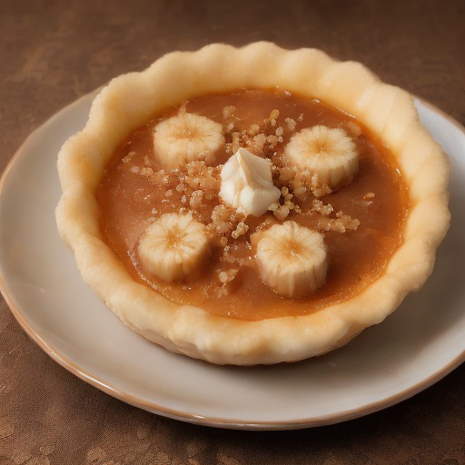

デザート
バナナキャラメルブリュレの魔境デザート

熟したバナナの甘さとキャラメルの香ばしさ、そして驚くほどクリーミーなブリュレが一体化した、まるで魔境のスイーツ！ 悪魔的な美味しさのデザートを是非お試しください。
💡 こんな時・こんな人におすすめ！
特別な日のデザートに、または、日常の特別な時間にも！
📋 必要な材料（ポストイット風）
材料リスト 1
- 完熟バナナ2個
- キャラメルソース適量
- ホワイトチョコ適量
材料リスト 2
- バター適量
- 生クリーム適量
🍳 作り方ステップ
1
バナナを1つ、中火で焼いて、キャラメルソースを塗る。
2
キャラメルソースを塗ったバナナを、ホワイトチョコでコーティングする。
3
ホワイトチョコが溶けたら、バターを混ぜて、生クリームを加えて、なめらかになるまで混ぜる。
4
焼き加減を見ながら、生クリームの量を加え、最終的な形に仕上げる。